第四章 基本平面图形（高效培优单元测试·强化卷）
（考试时间：120分钟 试卷满分：120分）
一、选择题（本大题共10小题，每小题3分，共30分）
1．下列四个图中，能用 三种表示方法表示同一个角的是（ ）
三种表示方法表示同一个角的是（ ）
A． B．
B． C．
C．
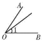
D．
2．下列语句准确规范的是（ ）
A．直线 ，
， 相交于一点
相交于一点 B．延长直线
B．延长直线
C．延长射线 D．延长线段到点
D．延长线段到点 ，使
，使
3．已知 ，
，
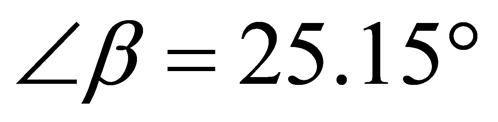
，则 与
与 的大小关系是（ ）
的大小关系是（ ）A． B．
B． C．
C．
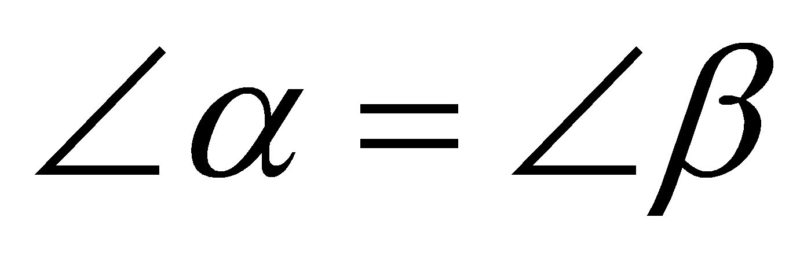
D．无法确定4．下列说法正确的是（ ）
A．圆的周长都相等
B．圆上任意两点间的部分叫做圆弧
C．顶点在圆上的角叫做圆心角
D．由一条弧和经过这条弧的两个端点的两条线段组成的图形叫做扇形
5．如图，是某住宅小区平面图，点M是某小区“菜鸟驿站”的位置，图中各条线为小区内的小路，从居民楼点N到“菜鸟驿站”点M的最短路线是（ ）

A．④ B．③ C．② D．①
6．如图，线段
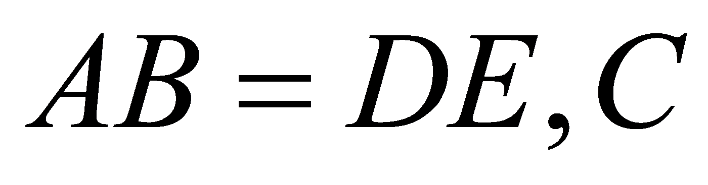
为线段 的中点，下列式子不正确的是（ ）
的中点，下列式子不正确的是（ ）
A． B．
B．
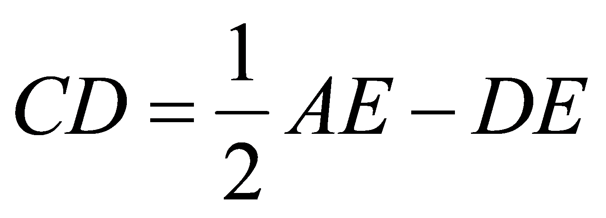
C． D．
D．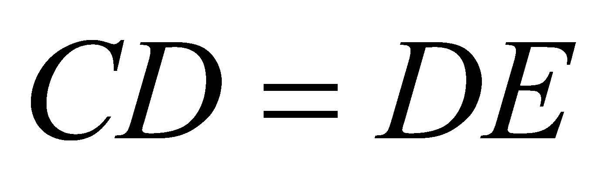
7．下面是几个角的度数，不能用两个三角板拼合画出的角是（ ）的角
A． B．
B． C．
C． D．
D．
8．如图， ，
，
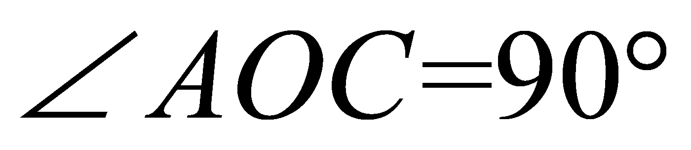
，点B，O， D在同一条直线上，则 的度数是（ ）
的度数是（ ）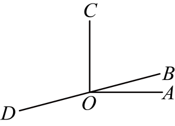
A．
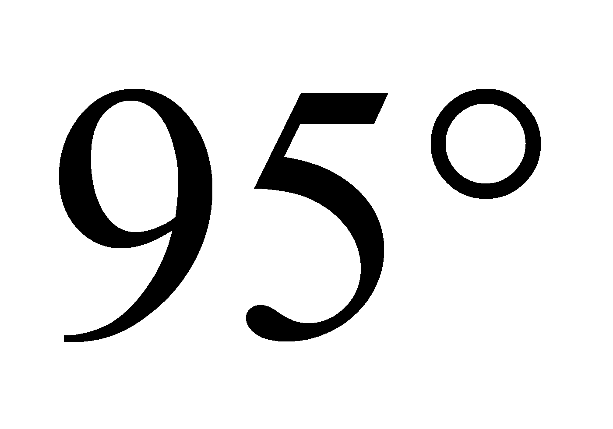
B． C．
C． D．
D．9．如图，一艘轮船在大海中航行，在点 处发现灯塔
处发现灯塔 在北偏西
在北偏西 方向，灯塔
方向，灯塔 在南偏东
在南偏东 的方向，则下列结论错误的是（ ）
的方向，则下列结论错误的是（ ）

A． 与
与 互为补角
互为补角
B． 平分
平分
C．图中以 为边的角有5个
为边的角有5个
D．
10．已知有理数a，b满足：
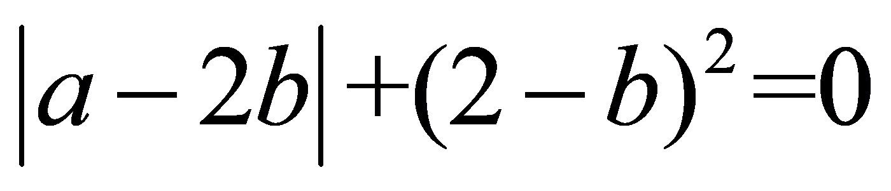
，如图，在数轴上，点O是原点，点A所对应的数是a，线段 在直线上运动（点B在点C的左侧），
在直线上运动（点B在点C的左侧）， ．
．下列结论：
① ；
；
②当点B与点O重合时， ；
；
③当点C与点A重合时，若点P是线段延长线上的点，则
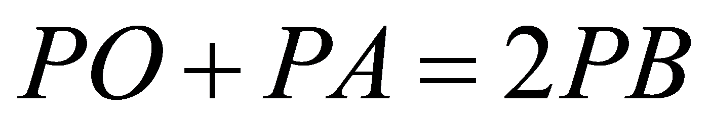
；④在线段运动过程中，若M为线段 的中点，N为线段
的中点，N为线段 的中点，则线段
的中点，则线段 的长度不变．其中正确的是（ ）
的长度不变．其中正确的是（ ）

A．①③ B．①④ C．①②③④ D．①③④
二、填空题（本大题共6小题，每小题3分，共18分）
11．六边形对角线的条数是 ．
12．


 ；
；

13．如图，一副直角三角板的顶点重合在一起，若 ，则
，则 的度数为 ．
的度数为 ．
14． 的《我爱发明》栏目，每周一至周五的播出时间是
的《我爱发明》栏目，每周一至周五的播出时间是 ，此时钟表的时针与分针的夹角为 ．
，此时钟表的时针与分针的夹角为 ．
15．已知 ，画射线
，画射线 ，使
，使
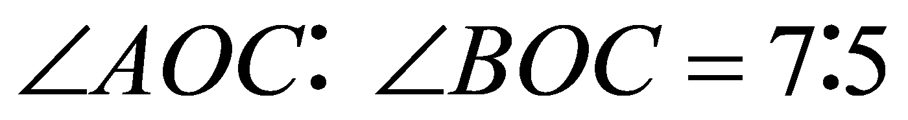
， 平分
平分 ，
， 平分
平分 ，则
，则 ．
．16．已知点P是射线上一点，当 或
或 时，称点P是射线的强弱点，若
时，称点P是射线的强弱点，若
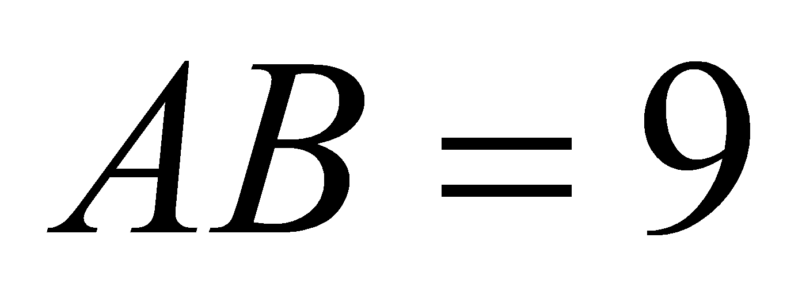
，则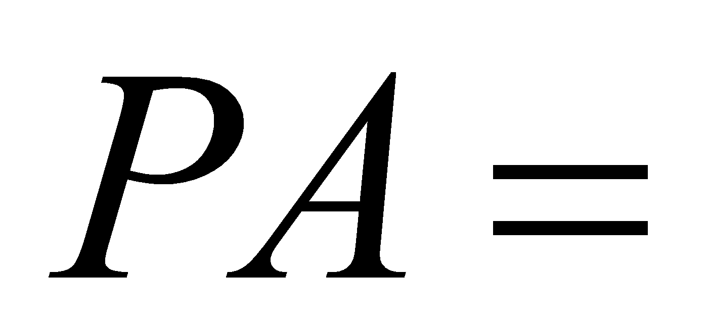
．三、解答题（第17，18，19，20题，每题6分；第21，22，23题，每题8分；第24，25题，每题12分；共9小题，共72分）
17．计算：
(1) ； (2)
； (2)
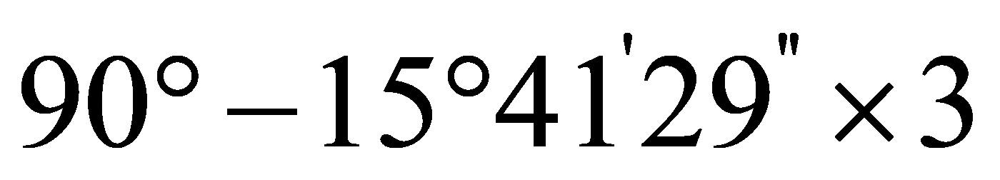
18．如图，点B是线段上一点，且
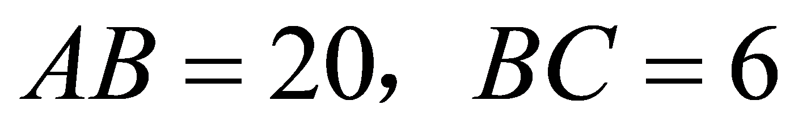
．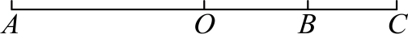
(1)图中共有 条线段；
(2)试求出线段的长；
(3)如果点O是线段的中点，请求线段的长．
19．如图所示，点B，D，C，F在同一条直线上．
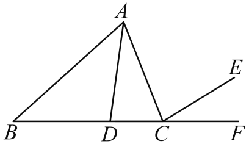
(1)图中哪个角可以用一个大写字母来表示？
(2)以A为顶点的角有几个？请表示出来．
(3) 与是同一个角吗？请说明理由．
与是同一个角吗？请说明理由．
20．如图，直线经过点O，平分，平分 ，若
，若 ，
， ．
．
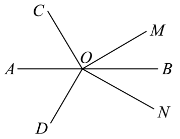
(1)求 的度数．
的度数．
(2)判断 与
与 的位置关系，并说明理由．
的位置关系，并说明理由．
21．如图，平面上有五个点
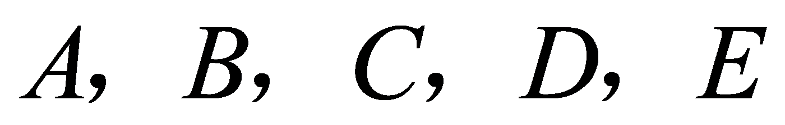
．按下列要求画出图形．(1)连接 ；
；
(2)画直线交于点M；
(3)画射线 ；
；
(4)请在平面上找一点O，使它与点B，C，D，E的距离之和最小（保留作图痕迹）．
22．综合与实践
学习完《平行线的证明》，我们积累了一定的研究经验，李凯和张芳将一副透明三角板中的两个直角三角尺的直角顶点按如图所示的方式叠放在一起，其中 ，
， ，
，
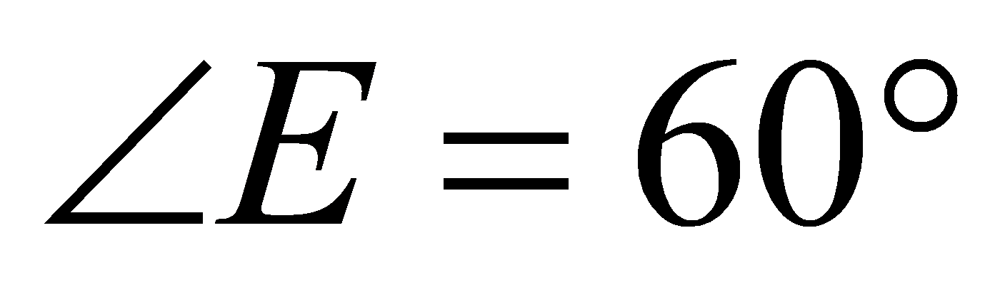
．
(1)操作判断
若 ，则
，则 ______；若
______；若 ，则
，则
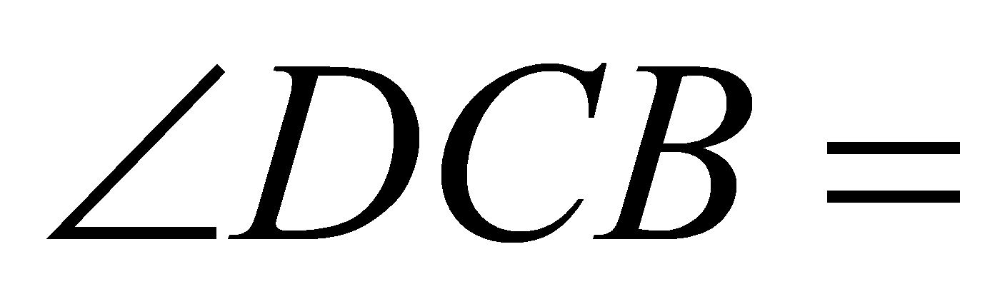
______；(2)性质探究
由（1）猜想 与
与 的数量关系，并证明你的猜想；
的数量关系，并证明你的猜想；
23．已知， 分别为线段上的点，
分别为线段上的点，

(1)如图 ，当
，当 时，试说明
时，试说明
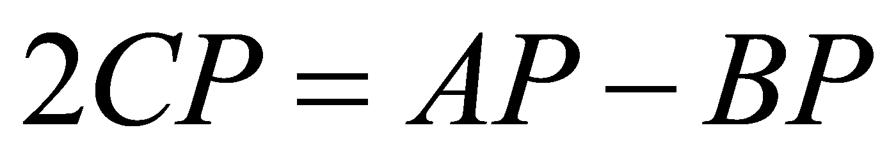
；(2)当 时，
时， 分别为
分别为 中点，且
中点，且 ，
， ，求的长．
，求的长．
24．如图，点O为直线上一点，过点O作射线，使．将一直角三角板的直角顶点放在点O处，一直角边 在射线上，另一直角边在直线的下方，
在射线上，另一直角边在直线的下方，

(1)将图①中三角板绕点O逆时针方向旋转至图②，使边在 内部，且恰好平分，求
内部，且恰好平分，求 大小；
大小；
(2)将图①中的三角板绕点O逆时针方向旋转至图③．
①如果恰好是 的角平分线，则
的角平分线，则 的度数为______；
的度数为______；
②如果始终在的内部，的度数不会变化，请猜测出的度数并说明理由．
25．如图1和图2，数轴
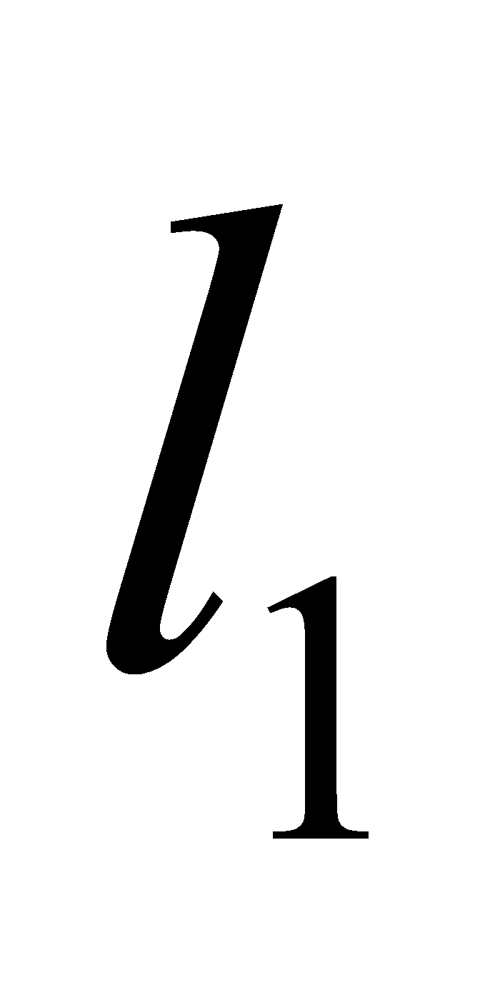
与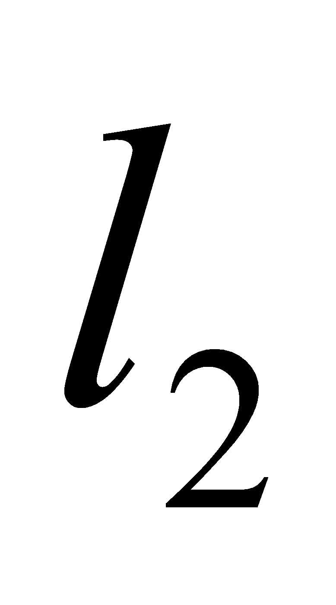
交于公共原点O，点M，N在数轴上且表示的数分别为2和 ，点P在数轴上，且
，点P在数轴上，且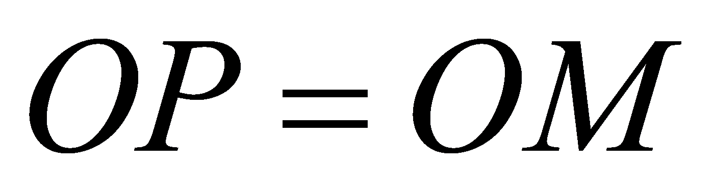
．初始状态下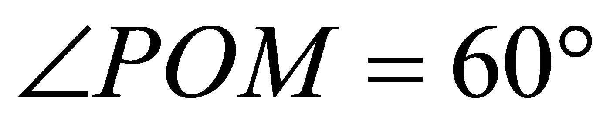
．
(1)如图1，若线段中点为A，求点A在数轴上表示的数；
(2)如图1，若点P在数轴上表示的数是4，将数轴绕点O旋转过程中，当数轴经过点N时，直接写出点N在数轴上表示的数为多少？
(3)如图2，将 绕点O逆时针旋转
绕点O逆时针旋转
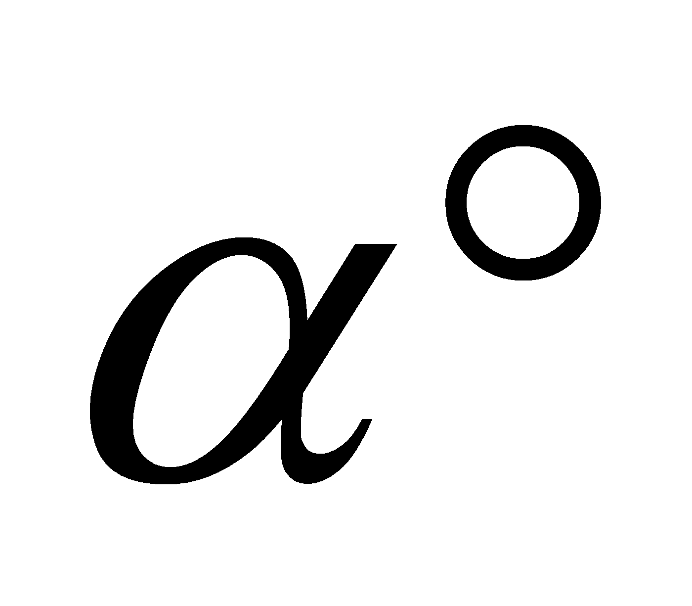
得到 ，将绕点O逆时针旋转
，将绕点O逆时针旋转 得到
得到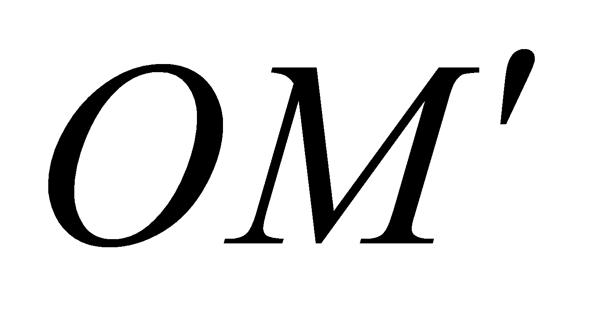
（其中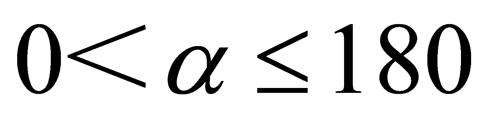
）．在整个旋转过程中，当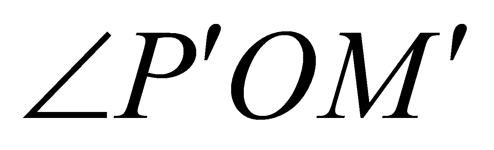
被数轴或平分时，直接写出所有符合条件的 值．
值．